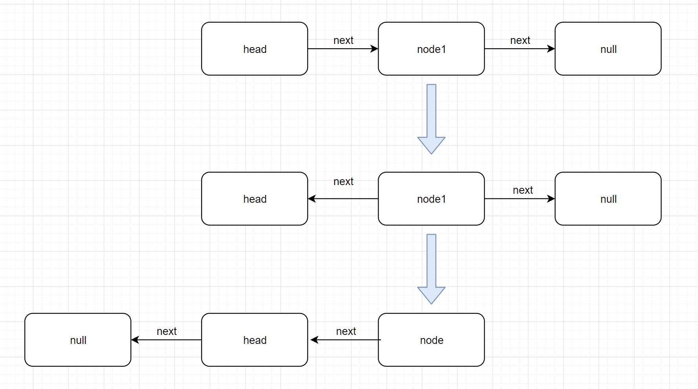

什么是链表
概念介绍
链表是一种比较基础也比较常见的数据结构，是一种线性表；但是其存储的地址却不是连续的，而是在链表的节点中保存一个到下一个节点的指针。我们来看下链表的维基百科的介绍：
在计算机科学中，链表（Linked list）是一种常见的基础数据结构，是一种线性表，但是并不会按线性的顺序存储数据，而是在每一个节点里存到下一个节点的指针(Pointer)。由于不必须按顺序存储，链表在插入的时候可以达到 O(1)的复杂度，比另一种线性表顺序表快得多，但是查找一个节点或者访问特定编号的节点则需要 O(n)的时间，而顺序表相应的时间复杂度分别是 O(logn)和 O(1)。使用链表结构可以克服数组链表需要预先知道数据大小的缺点，链表结构可以充分利用计算机内存空间，实现灵活的内存动态管理。但是链表失去了数组随机读取的优点，同时链表由于增加了结点的指针域，空间开销比较大。(维基百科)
从上述介绍中，我们可以知道链表的节点有两个属性：节点保存的值(element)和指向下一个节点的指针(next)，而链表就是由很多个很多节点组成，最后一个节点的next指针指向null；
既然我们已经清楚了链表的结构那接下来我们就用JavaScript来实现一下链表的数据结构以及增删改查等方法。
链表的实现
链表数据结构的实现
class Node {
constructor(element, next) {
this.element = element; // 当前节点保存的值
this.next = next; // 指向下一个节点
}
}链表的数据结构暂时也只需要包含两个属性，链表的头节点(head)和链表的长度：
class LinkedList {
constructor() {
// 链表的头节点
this.head = null;
// 链表的长度
this.size = 0;
}
}链表方法的实现
链表的方法有很多，我们今天来实现一下基础的增、删、改、查对应的方法以及链表的反转。
查(getNode)
首先我们来实现一下链表的查找功能，这个方法主要就是根据给定的索引查找出该索引对应的节点。链表查找和数组不同的是链表不能直接用下标获取元素，而是要从头节点开始遍历，找到给定的索引值为止，将 找到节点返回即可。用一个简单地循环就能实现，但是这里要注意判断一下给定的索引值不能超出链表的长度范围。
getNode(index) {
let head = this.head;
let offset = 0; // 记录当前遍历的索引
if (index >= this.size) return new Error("Index exceeds the range of the linked list");
while (offset++ < index) {
head = head.next;
}
return head;
}增(add)
链表增加节点方法主要是将给定的值插入到链表中的指定位置(索引)即可。这里可以大致将存在的情况分为 3 类：1、没有给定插入的位置(索引)；2、给定的插入位置(索引)为 0；3、其他情况；
1、没有给定插入的位置(索引)；这种情况下，我们直接将给定的值插入到链表末尾即可；
2、给定的插入位置(索引)为 0；这种情况下，我们将给定的值作为新的头节点插入到链表中即可；
3、其他情况；这种情况下我们先找到指定索引前一个节点(prevNode)，将该节点的 next 指针指向要插入的节点，并将要插入的节点的 next 指向 prevNode 原本 next 指向的节点；
插入成功之后记得将节点的长度更新。上述的逻辑用代码表示即为：
// 新增链表节点，index -- 新增节点的索引，element -- 新增节点的值
add(index, element) {
// 可以不传索引，如果不传索引，则默认在末尾插入
if (arguments.length === 1) {
element = index;
index = this.size;
}
// 在链表头部插入
if (index === 0) {
// 缓存旧的头节点
const oldHead = this.head;
// 讲新节点的 next 指向旧的头结点
this.head =
element instanceof Node ? element : new Node(element, oldHead);
} else {
// 不是在头节点之前插入，
// 则取要插入位置的前一个(index - 1)节点，将该节点的 next 指向新节点，将新节点的 next 指向旧节点之前指向 next 指向的元素
const oldPrevNode = this.\_getNode(index - 1);
oldPrevNode.next = new Node(element, oldPrevNode.next);
}
// 完成之后节点长度需要增加
this.size++;
}改(update)
改的方法非常简单，找到 指定的节点更新节点的值(element)即可。
// 更新节点信息
update(index, element) {
const updateNode = this.getNode(index);
updateNode.element = element;
return updateNode;
}删(remove)
删除操作是给定一个指定的索引，删除该索引对应的节点。这里主要区分一下要删除的是否是头节点就可以了；如果要删除的是头节点，那直接将链表的头节点(head)指向之前头节点的下一个节点即可；如果删除的不是头节点，那就需要找到给定索引对应的前一个节点(prevNode)，将 prevNode 的 next 指向要移除的节点的 next 即可，并将删除的元素返回，还要更新链表长度。
// 删除指定的节点
remove(index) {
// 这里需要区分是否是删除第一个节点
let removeNode;
if (index === 0) {
removeNode = this.head;
// 如果是空链表
if (removeNode === null) return;
this.head = this.head.next;
} else {
// 找到删除节点(removeNode)的前一个节点 prevNode，将 prevNode 的 next 指针指向 removeNode 的 next
const prevNode = this.getNode(index - 1);
if (!prevNode) return;
removeNode = prevNode.next;
prevNode.next = prevNode.next.next;
}
this.size--;
return removeNode;
}接下来测试一下链表的增删改查：
const testLink = new LinkedList();
testLink.add(1);
testLink.add(2);
testLink.add(3);
testLink.add(4);
testLink.add(5);
console.log("插入节点之后的链表：", testLink);
console.log("链表查找：", testLink.getNode(3));
testLink.update(1, 99);
console.log("更新节点之后的链表：", testLink);
console.log("链表的删除", testLink.remove(0));
console.log("删除节点之后的链表：", testLink);
// 插入节点之后的链表：LinkedList {
// head: Node { element: 1, next: Node { element: 2, next: [Node] } },
// size: 5
// }
// 链表查找：Node { element: 4, next: Node { element: 5, next: null } }
// 更新节点之后的链表：LinkedList {
// head: Node { element: 1, next: Node { element: 99, next: [Node] } },
// size: 5
// }
// 链表的删除 Node {
// element: 1,
// next: Node { element: 99, next: Node { element: 3, next: [Node] } }
// }
// 删除节点之后的链表：LinkedList {
// head: Node { element: 99, next: Node { element: 3, next: [Node] } },
// size: 4
// }
链表的反转
到这里链表基本上算是已经实现了，接下来我们来看一道常见的面试题：实现单项链表的反转。今天我们用两种方式来实现一下：递归法 和 遍历法。
递归法
我们先假设只有两个节点的时候，过程如下图：

将上图中的过程翻译成代码即为：
head.next.next = head; // 这一步是改变 head 和 node1 之间 next 的指向
head.next = null; // 这一步是将 head 变为最后一个节点，因此要将其 next 指向 null上面演示的是链表只有两个节点时的情况，接着我们就扩展到多个节点的情况，我们知道递归就是自己调用自己并且先执行最里面的一层代码，所以我们可以将上述的过程封装一下，并且加上结束递归的条件(head === null || head.next === null)，这样整个链表反转就实现了：
reverseByRecursion() {
function _reverse(head) {
if (head === null || head.next === null) return head;
const newHead = _reverse(head.next);
head.next.next = head;
head.next = null;
return newHead;
}
return _reverse(this.head);
}遍历法
遍历的方法就是从头节点开始遍历，依次取出遍历到的节点，将取出的节点按顺序插入到头节点的前面即可。
// 链表反转实现二：从头遍历链表，一次取出节点数据插入到头节点之前
// 最终返回的是反转之后的头节点
reverseByInsert() {
let curHead = this.head;
if (curHead === null || curHead.next === null) return;
let newHead = null;
// 这里必须用一个 nextNode 来引用链表，如果直接使用 curHead.next 的话
// curHead 后面的内容就会丢失，从而内存空间被回收
while (curHead) {
let nextNode = curHead.next;
curHead.next = newHead;
newHead = curHead;
curHead = nextNode;
}
return newHead;
}
}用链表实现队列
我们知道队列的特点是先进先出，也就是从队尾入队，从队头出队。所以用链表实现队列结构特别简单，入队就是用 add 方法往链表的最后插入节点即可，出队则是删除的队列的头节点。代码如下：
// 利用链表实现队列：先进先出(队尾入列，对头出列)
class Queue {
constructor() {
this.linkedList = new LinkedList();
}
// 队列是在末尾添加
add(element) {
this.linkedList.add(element);
}
// 队列出列是从队头出列
peak() {
return this.linkedList.remove(0);
}
}总结
到这里今天链表的内容就到此结束了，实际上和链表相关的内容远不止这些，在面试中有关链表的题目也经常被问到。所以，有关链表的内容必须要掌握扎实才行！
本篇内容的完整代码如下：
// 链表的定义及相关操作
// 链表就是关联每一个节点数据来使用，链表结构对于删除和添加的复杂度较低
// 链表的分类：单向链表 和 双向链表
// 链表的实现
// 链表中的节点
class Node {
constructor(element, next) {
this.element = element;
this.next = next;
}
}
class LinkedList {
constructor() {
// 链表的头指针
this.head = null;
// 链表的长度
this.size = 0;
}
// 根据索引查找节点
_getNode(index) {
let head = this.head;
let offset = 0; // 记录当前遍历的索引
if (index >= this.size) return new Error("Index exceeds the range of the linked list");
while (offset++ < index) {
head = head.next;
}
return head;
}
// 新增链表节点，index -- 新增节点的索引，element -- 新增节点的值
add(index, element) {
// 可以不传索引，如果不传索引，则默认在末尾插入
if (arguments.length === 1) {
element = index;
index = this.size;
}
// 在链表头部插入
if (index === 0) {
// 缓存旧的头节点
const oldHead = this.head;
// 讲新节点的 next 指向旧的头结点
this.head =
element instanceof Node ? element : new Node(element, oldHead);
} else {
// 不是在头节点之前插入，
// 则取要插入位置的前一个(index - 1)节点，将该节点的 next 指向新节点，将新节点的 next 指向旧节点之前指向 next 指向的元素
const oldPrevNode = this.\_getNode(index - 1);
oldPrevNode.next = new Node(element, oldPrevNode.next);
}
// 完成之后节点长度需要增加
this.size++;
}
// 更新节点信息
update(index, element) {
const updateNode = this._getNode(index);
updateNode.element = element;
return updateNode;
}
// 根据索引获取对应的节点
getNode(index) {
return this._getNode(index);
}
// 删除指定的节点
remove(index) {
// 这里需要区分是否是删除第一个节点
let removeNode;
if (index === 0) {
removeNode = this.head;
// 如果是空链表
if (removeNode === null) return;
this.head = this.head.next;
} else {
// 找到删除节点(removeNode)的前一个节点 prevNode，将 prevNode 的 next 指针指向 removeNode 的 next
const prevNode = this._getNode(index - 1);
if (!prevNode) return;
removeNode = prevNode.next;
prevNode.next = prevNode.next.next;
}
this.size--;
return removeNode;
}
// 链表的反转两种实现：递归 和 新建链表
reverseByRecursion() {
function _reverse(head) {
if (head === null || head.next === null) return head;
// 采用递归
const newHead = _reverse(head.next);
head.next.next = head;
head.next = null;
return newHead;
}
return _reverse(this.head);
}
// 链表反转实现二：从头遍历链表，一次取出节点数据插入到头节点之前
// 最终返回的是反转之后的头节点
reverseByInsert() {
let curHead = this.head;
if (curHead === null || curHead.next === null) return;
let newHead = null;
// 这里必须用一个 nextNode 来引用链表，如果直接使用 curHead.next 的话
// curHead 后面的内容就会丢失，从而内存空间被回收
while (curHead) {
let nextNode = curHead.next;
curHead.next = newHead;
newHead = curHead;
curHead = nextNode;
}
return newHead;
}
}
// 利用链表实现队列：先进先出(队尾入列，对头出列)
class Queue {
constructor() {
this.linkedList = new LinkedList();
}
// 队列是在末尾添加
add(element) {
this.linkedList.add(element);
}
// 队列出列是从队头出列
peak() {
return this.linkedList.remove(0);
}
}
module.exports = {
LinkedList,
Queue,
};